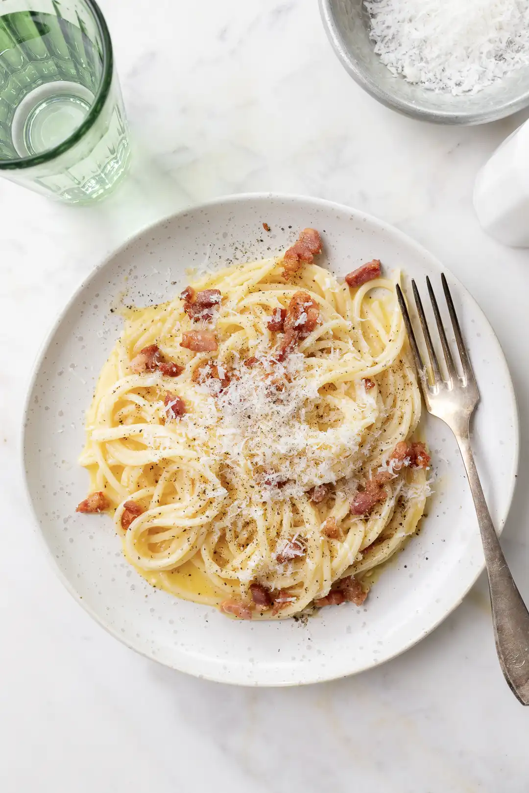

Carbonara Recipe
Home

Description
Spaghetti à la carbonara or pasta carbonara, one of the most famous Italian recipes all around the world, comes from Lazio. If you have already been to Rome, you must have tasted it there. This recipe is an authentic Italian pasta.
Although several versions may be found in cookbooks, the authentic carbonara is made with only a few ingredients: long-shaped pasta like spaghetti, pancetta (or thick-cut bacon), eggs, Pecorino Romano cheese, salt, and some pepper. Nothing more is added—no onion or garlic, no cream, no butter or oil. That’s the reason why it is less rich in calories than you may think.
Ingredients
- 1 lb spaghetti
- 1/2 cup guanciale or pancetta
- 4 egg yolks
- 1 egg
- 2/3 cup Pecorino Romano cheese
- 1 tsp peppercorn grated
Steps
- Toast the peppercorns in a pan over medium heat. Stir them to keep from burning. Allow to cool down and coarsely crush them in a mortar or use a pepper mill.
- Slice the guanciale into thin stripes and quickly brown them in the same pan you have toasted the pepper. (Personally, I do not like to dice it.) Do not overcook, so remove the pan from the heat and let stand.
- Set aside some of the fat, which has been released.
- Beat the eggs in a large bowl, stir in half the Pecorino, the peppercorns, and the fat from the pork. Season to taste.
- Cook the pasta until al dente in plenty of salted boiling water according to the package instructions. Drain it and save a scoop of pasta cooking liquid.
- Drain the pasta and put it into the bowl with the egg; add a splash of pasta cooking liquid and toss well. Be careful not to add too much water; otherwise, the carbonara will get too liquidy.
- Add the guanciale, the remaining Pecorino, and more water, if needed, to the creamy, smooth sauce.